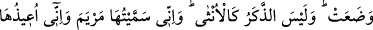

ameline bütün hayatını tahsîs etmek için onu sana adadım, mânası kastedilmiştir.
Nezrin böylesi onlar arasında meşrû idi. Çünkü dinlerine göre çocuk hizmet edecek
çağa geldiği zaman ana ve babasına hizmet etmesi vacib idi. Bu sebeple nezr ile böyle
bir istifadeyi terkediyorlar ve çocuklarını kendi hizmetlerinden âzâd ederek mescidin
hizmetine veriyorlardı. Hiçbir peygamber yoktur ki, neslinden Beytü’l-Makdis için âzâd
edilip hizmetine verilen kimse bulunmasın. Bu işe ancak erkek çocuklar tahsîs edilirdi.
Âdet görme ve sâir ezâlara mübtelâ olmaları sebebiyle kız çocukları bu hizmete tahsîs
edilmezlerdi. Çünkü zaman zaman dışarı çıkma ihtiyacında idiler. Ancak “Hınne”
karnındakini mutlak olarak kendi hizmetinden âzâd etmişti. Bunu ya çocuğunun erkek
olacağı ihtimaline binaen, yahud erkek çocuk istemeye vesîle olması için yapmıştı.
“Benden bunu kabul et.” Yani adağımı benden kabul et. “Tekabbül” bir şeyi râzı
olarak almak demektir. Bu, hakikatte bir oğlan çocuğu istemektir. Çünkü makbûl olacak
şeyin varlığı düşünülmeden kabul düşünülemeyeceğine göre erkek çocuk istemiştir.
Çünkü kız çocuğunun bu hizmete verilemeyeceğini bilmektedir.
“Şüphesiz ki sen hakkıyla işitensin.” Her şeyi işitirsin. Bu cümleden olarak benim
tazarrû ve niyâzımı da işitiyorsun. “Kemâliyle bilen”sin; her şeyi bilirsin. Benim
kalbimi, gönlümü kalbimdeki niyetimi bilirsin.
36. Onu doğurunca, Allah, ne doğurduğunu bilip dururken: Rabbim! Ben onu kız
doğurdum. Oysa erkek, kız gibi değildir. Ona Meryem adını verdim. Kovulmuş
şeytana karşı onu ve soyunu senin korumanı diliyorum, dedi.
“(İmrân’ın karısı) Onu (çocuğunu) doğurunca,” -oğlan olmasını arzu ediyordu-
“Rabbim ben bunu kız olarak doğurdum.” dedi. Hınne, ümidinin boşa çıktığını ve
kendi yaptığı hesabın aksine bir durum zuhûr ettiğini görünce üzülerek böyle dedi.
“Allah, onun ne doğurduğunu daha iyi bilirken (bilmektedir).” Bu, Allah tarafından
Hınne’nin içinde yaşadığı duyguların ta’zimidir. Çünkü o, kız doğurduğuna üzülüp içi
parçalandığında Allah Teâlâ buyurdu ki: O, kendine verilenin kadrini bilmemektedir.
Onun dünyaya getirdiği kız çocuğunun kadrini, onda göstereceği güzellikleri ve büyük
işleri Allah bilmektedir. Çünkü Allah Teâlâ onu ve çocuğunu âlemlere âyet kılacaktır.
Hınne ise bunları bilmemiş ve bu sebeple hasret ve üzüntü duymuştur.
“Erkek, kız gibi değildir.” Hınne’nin içinde yaşadığı konuyu ta’zîm için bu da
Allah’ın sözüdür. Onun menzilesinin yüksek olduğunu beyândır. Erkek mânasındaki
“Zeker” ve kız anlamındaki “ünsâ” kelimelerinin başlarındaki “lâm” ahd içindir ve şu